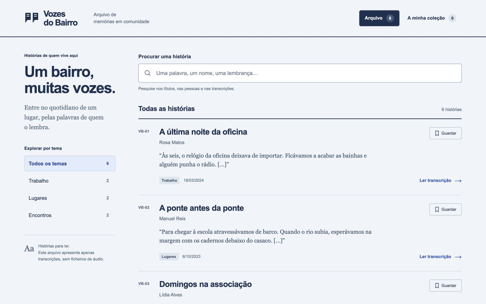
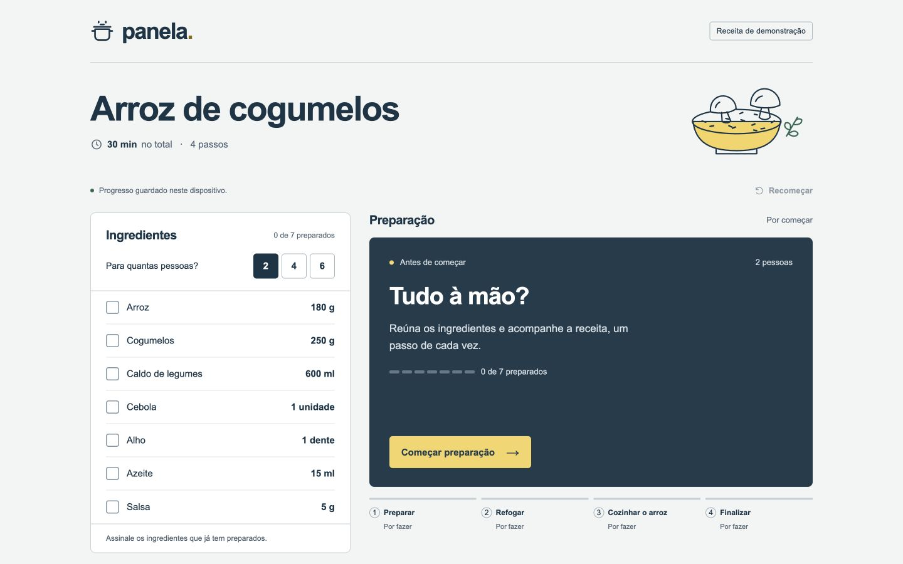
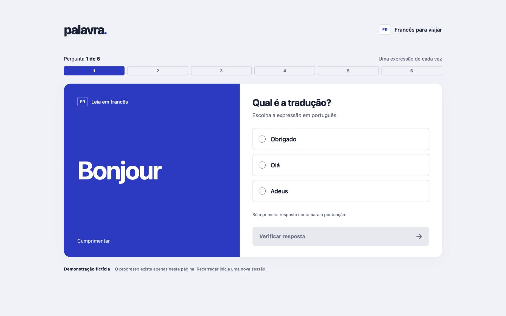

Vozes do Bairro
Encontrar uma história, ler a transcrição e guardar uma coleção pessoal. Pesquisa, temas e recuperação de busca vazia.
Explorar o arquivo13 de novembro de 2026 · rodada independente
Cada interface recebeu tarefas, conteúdo e requisitos funcionais. A skill v0.2 foi a única orientação de design. Os agentes trabalharam separadamente e os arquivos entregues foram preservados sem correções do avaliador.

Encontrar uma história, ler a transcrição e guardar uma coleção pessoal. Pesquisa, temas e recuperação de busca vazia.
Explorar o arquivo
Ajustar porções, preparar ingredientes e acompanhar uma receita, mantendo o progresso entre visitas.
Preparar a receita
Praticar seis expressões francesas, conferir respostas e revisar os erros com uma pontuação da primeira tentativa.
Iniciar a práticaEstes são os primeiros resultados independentes da rodada, incluindo as suas limitações. A galeria foi montada pelo avaliador e não é um quarto teste. O relatório registra a comparação visual e os fluxos verificados.
Uma execução por projeto não comprova originalidade universal, superioridade em relação a outra versão ou usabilidade com participantes. Os produtos, histórias e estados são demonstrações; os dados ficam apenas neste navegador.